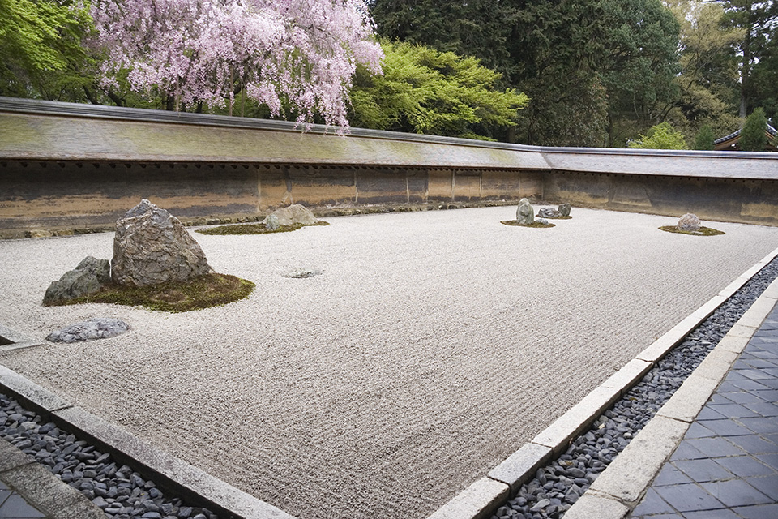
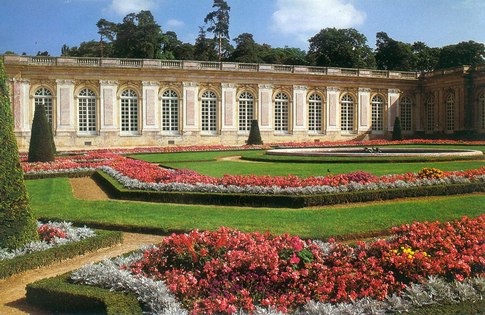
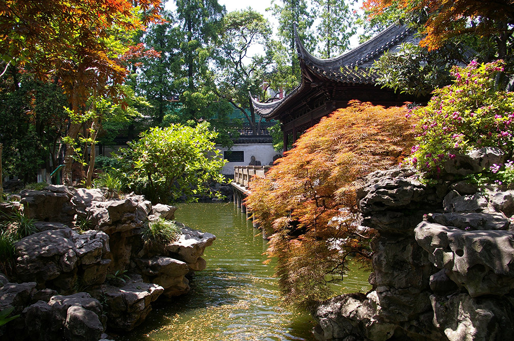

Japanese Rock Garden

The Japanese rock garden (枯山水, karesansui) or "dry landscape" garden, often called a zen garden, creates a
miniature stylized landscape through carefully composed arrangements of rocks, water features, moss, pruned
trees and bushes, and uses gravel or sand that is raked to represent ripples in water.[1] A zen garden is
usually relatively small, surrounded by a wall, and is usually meant to be seen while seated from a single
viewpoint outside the garden, such as the porch of the hojo, the residence of the chief monk of the temple or
monastery.

TThe French formal garden, also called the jardin à la française (literally, "garden in the French manner" in
French), is a style of garden based on symmetry and the principle of imposing order on nature. Its epitome is
generally considered to be the Gardens of Versailles designed during the 17th century by the landscape
architect
André Le Nôtre for Louis XIV and widely copied by other European courts.[1]
Chinese Garden

The Chinese garden is a landscape garden style which has evolved over three thousand years. It includes both
the
vast gardens of the Chinese emperors and members of the imperial family, built for pleasure and to impress,
and
the more intimate gardens created by scholars, poets, former government officials, soldiers and merchants,
made
for reflection and escape from the outside world. They create an idealized miniature landscape, which is meant
to express the harmony that should exist between man and nature.[1]
Italian Renaissance Garden

The Italian Renaissance garden was a new style of garden which emerged in the late 15th century at villas in
Rome and Florence, inspired by classical ideals of order and beauty, and intended for the pleasure of the view
of the garden and the landscape beyond, for contemplation, and for the enjoyment of the sights, sounds and
smells of the garden itself.